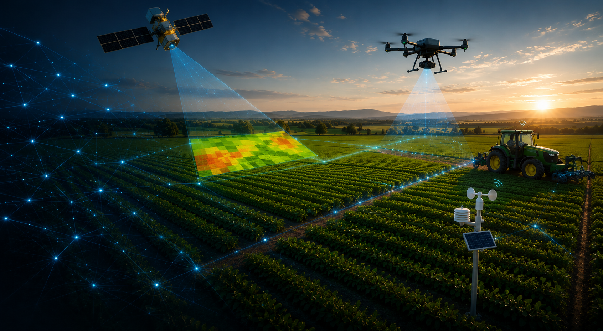
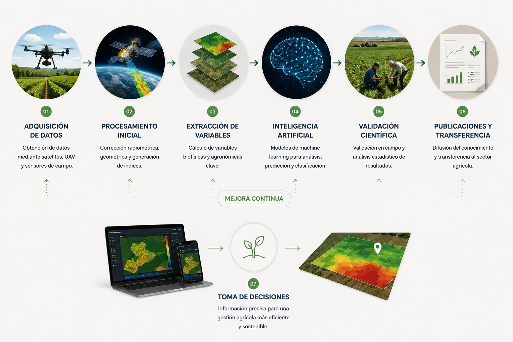
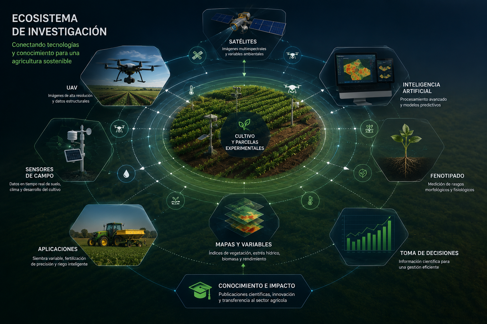
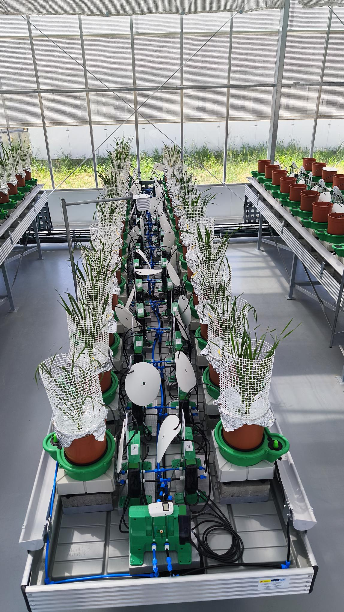
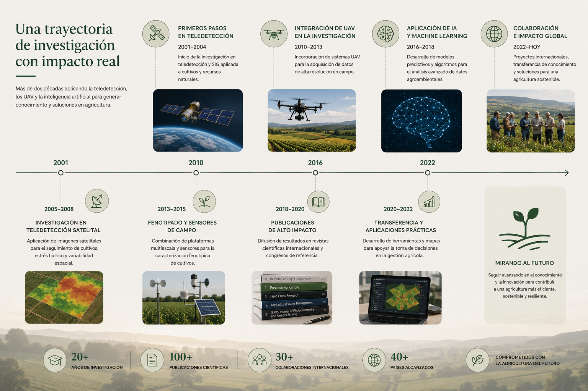

La investigación comienza en el campo, donde satélites, drones y sensores generan datos. A través del análisis, la inteligencia artificial y la validación científica, esos datos se transforman en conocimiento útil para comprender los cultivos y mejorar la agricultura.
Explorar el procesoCada campaña experimental genera miles de observaciones procedentes de sensores remotos, drones, estaciones meteorológicas y medidas de campo. Estos datos se integran mediante metodologías avanzadas para comprender el funcionamiento de los cultivos y responder a retos relacionados con el agua, la productividad y la sostenibilidad.
Esta página muestra cómo todas las líneas de investigación desarrolladas por David Gómez Candón forman parte de un único ecosistema científico, donde cada tecnología aporta información complementaria para generar conocimiento y apoyar la toma de decisiones.
Captura de información mediante satélites, UAV y sensores.
Integración de datos, análisis estadístico y aprendizaje automático.
Publicaciones científicas, innovación y transferencia tecnológica.
Cada dato adquirido en campo sigue un proceso científico que combina observación, análisis, modelización y validación hasta convertirse en conocimiento útil para la investigación y la agricultura.

Satélites, drones, sensores de campo, fenotipado e inteligencia artificial forman parte de un mismo sistema. La integración de estas tecnologías permite comprender mejor el comportamiento de los cultivos y desarrollar soluciones innovadoras para una agricultura más eficiente y sostenible.

"La investigación no consiste únicamente en obtener datos, sino en transformarlos en conocimiento que genere impacto científico y contribuya a una agricultura más sostenible."

La investigación desarrollada combina experimentos controlados en invernadero con tecnologías avanzadas de monitorización, permitiendo registrar de forma continua la respuesta de los cultivos frente a diferentes condiciones ambientales y de manejo.
La integración de sensores, sistemas automatizados y medidas fisiológicas proporciona la base para desarrollar y validar metodologías de teledetección, fenotipado e inteligencia artificial aplicadas a una agricultura más eficiente y sostenible.
Una trayectoria científica marcada por la integración de nuevas tecnologías, la colaboración internacional y la transferencia del conocimiento al sector agrícola.
